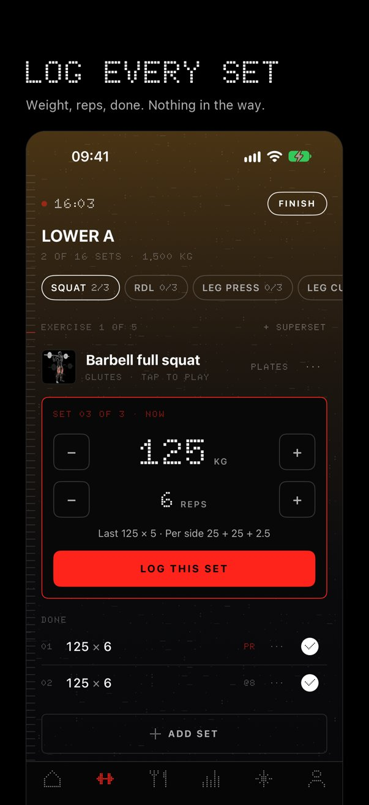
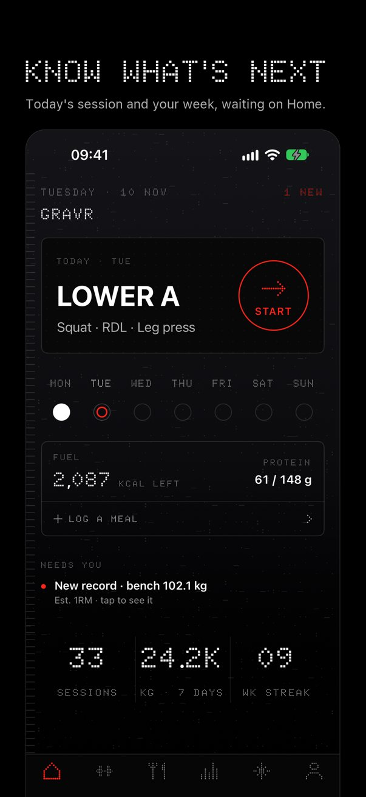
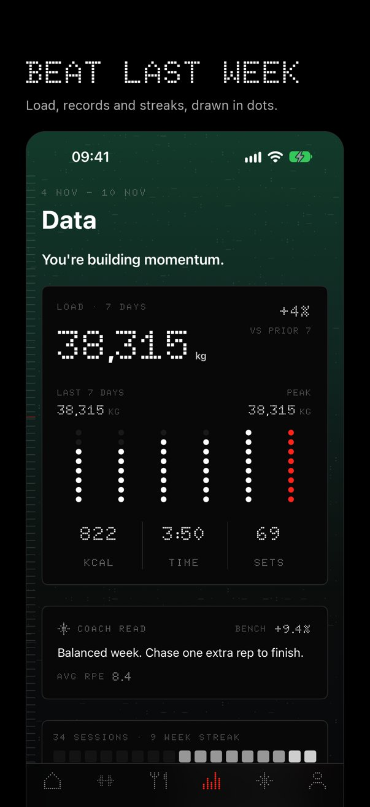
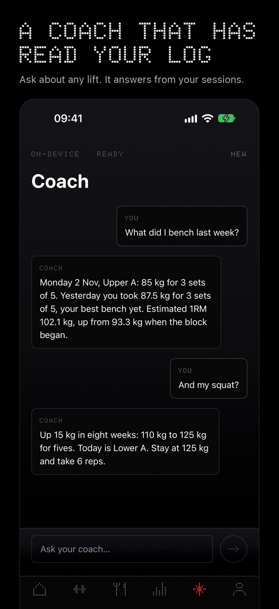
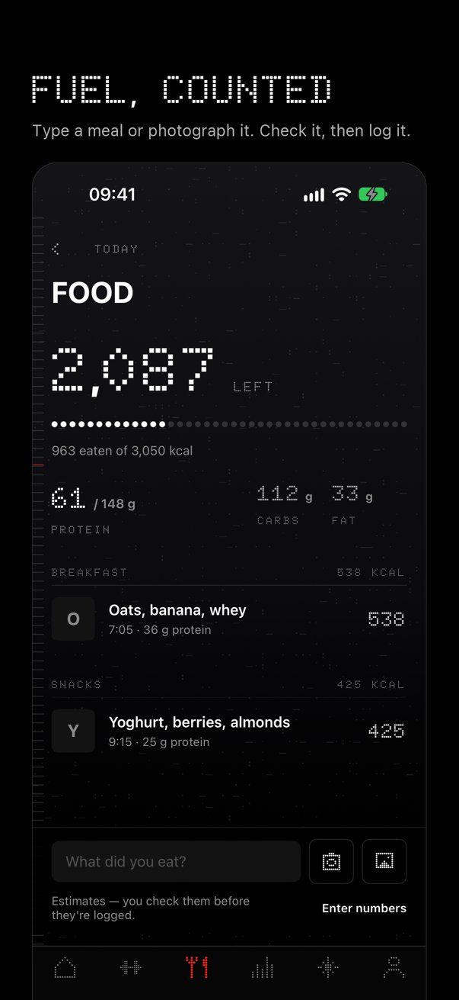
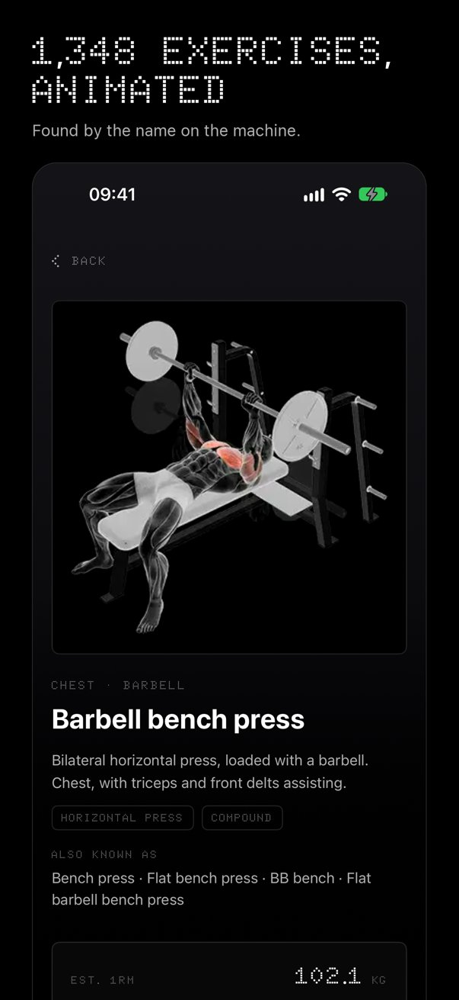

Log every set.
Beat last week.
GRAVR is a workout and food log for iPhone. Tap to log a set, see your week drawn in dots, and ask a coach that has read your log. No account, no ads, no tracking.





